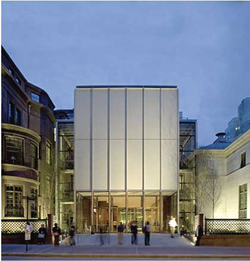
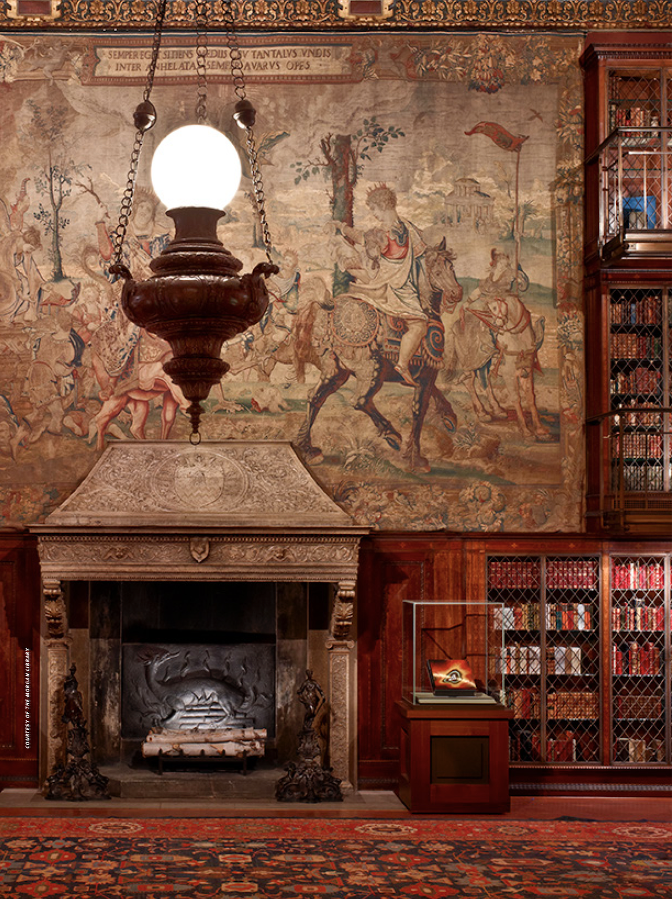
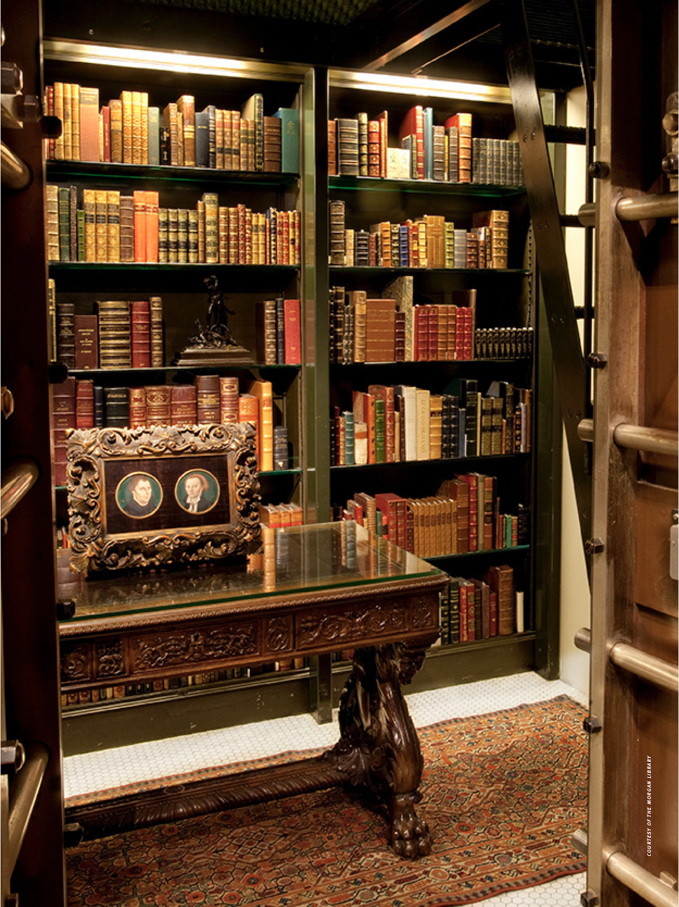

A piece of Lithuania in the heart of Chicago
By Sruthi Darbhamulla
IT WAS A BIBLIOPHILE’S dream. I had been invited to a book party, or rather, a dinner party to celebrate a book (the difference being that at the first one you mill around trying to nab passing canapés, whereas this was a sit-down, multi-course affair) at the Morgan Library. Anyone dining in this golden palace of tomes, this glittering enclaves of precious volumes, this, this…well, this giant room packed with old books, actually...would feel their poet’s soul inspired. People who treasure the smell of bound paper know how magical these places are. We were lucky enough to have a hostess, Kathy Raynor, who could offer this impossible setting for the evening.
Located at 225 Madison Avenue, the Morgan Library & Museum was founded on the vast collection of financier John Pierpont Morgan, who had a sharp-eyed curator in his personal librarian, Belle da Costa Greene. For several decades, the library had the atmosphere of someone’s fantastical attic, with warrens of unconnected buildings housing disjointed groups of priceless prints, books, and drawings. This was the antithesis of museums like the meticulously planned Barnes Foundation, but still the Morgan managed to project an air of authority because of its disarray: after all, if the most important aspect of a collection is its substance, why be bothered with superficial things like interior design? The museum was like those academics whose grizzled hair and crooked glasses proclaim their wearer more interested in spending the morning finishing a book than finishing their coiffure.

Then, in 2006, Italian architect Renzo Piano gave the place a makeover. His renovations brought cohesion, exhibition space, and some much-needed light to the now-unified campus. The result is a perfect balance of intimate and expansive, where there is room to admire all the small treasures the Morgan has to offer. Freestanding display easels offer a pleasing way to closely examine the collection, such as the impressive medieval pieces currently scattered around, giving the viewer a more personal feel for the items than if they were sitting behind glass.
Following the success of that renovation, the McKim building, which had been Pierpont Morgan’s private study, underwent the most extensive restoration since its construction more than a century ago. The changes included restored period furniture, new lighting, and opening Belle da Costa Greene’s office to the public. This was a more modern, more approachable library, and one, according to museum director William Griswold, that properly showcased the McKim as the museum’s “heart and soul.”

The McKim building is the museum's "heart and soul” - William Griswold, Director, the Morgan Library & Museum
The Morgan Library & Museum was reborn as one of New York’s great little jewels, not only offering popular exhibits like the one on now about everyone’s favorite childhood story, Antoine de Saint-Exhupery’s The Little Prince, but also a spectacular backdrop for memorable nights.

After dinner, a group of us snuck off to the secured study vault. We coerced a docent to show us in, though it was very much after hours. We swore to touch absolutely nothing. We would enjoy with our eyes only. We used our very best manners and posture, and I can victoriously say that our sighs of contentment bounced off the walls of the inner sanctum of a place designed by someone who really, really loved books.
And, despite temptations, we did behave.